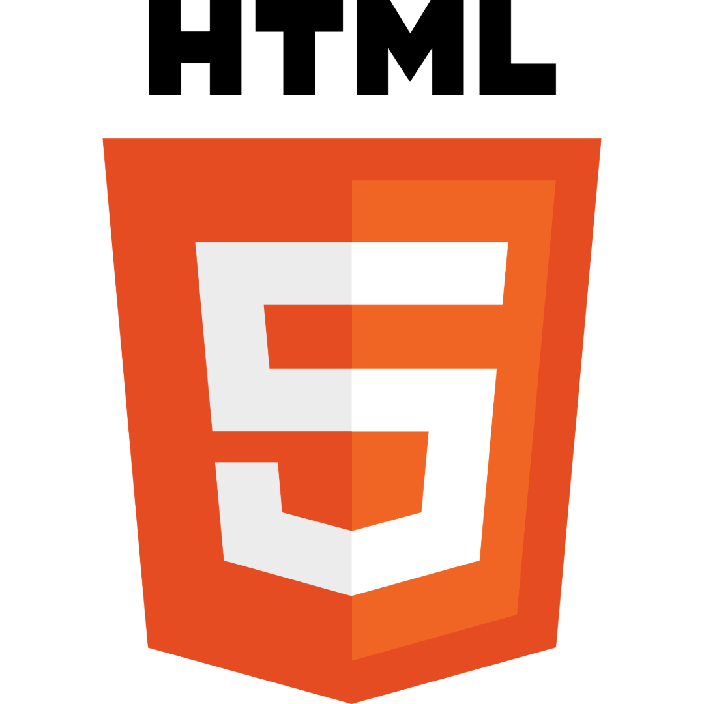
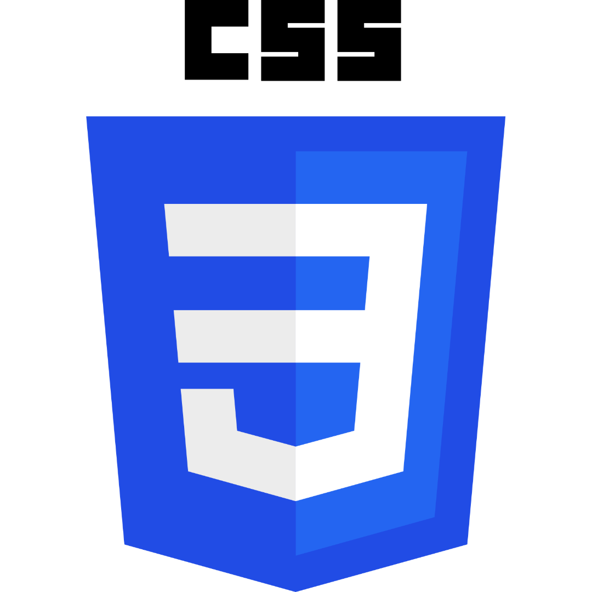
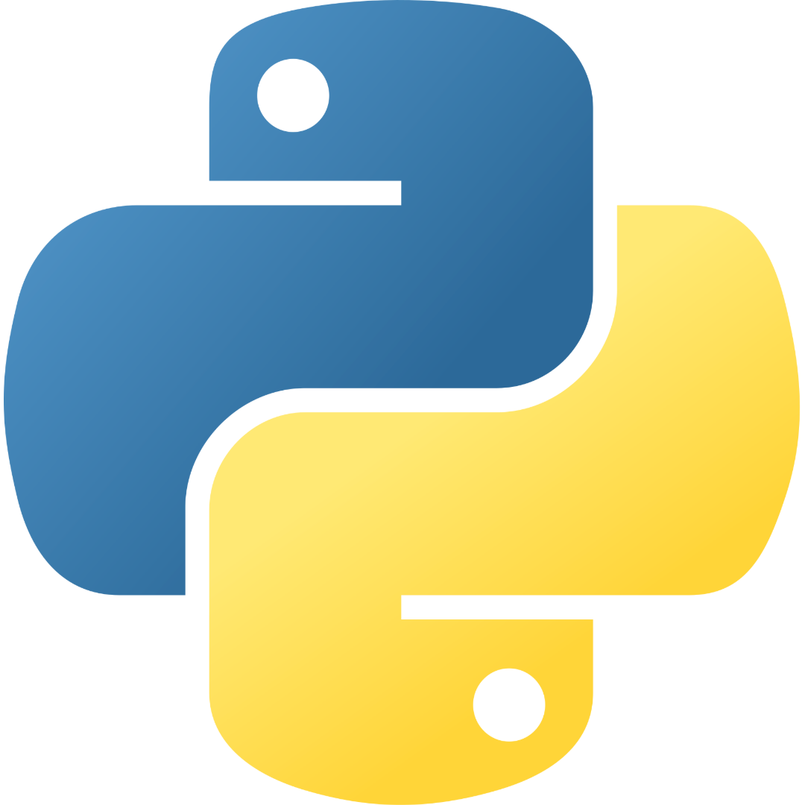
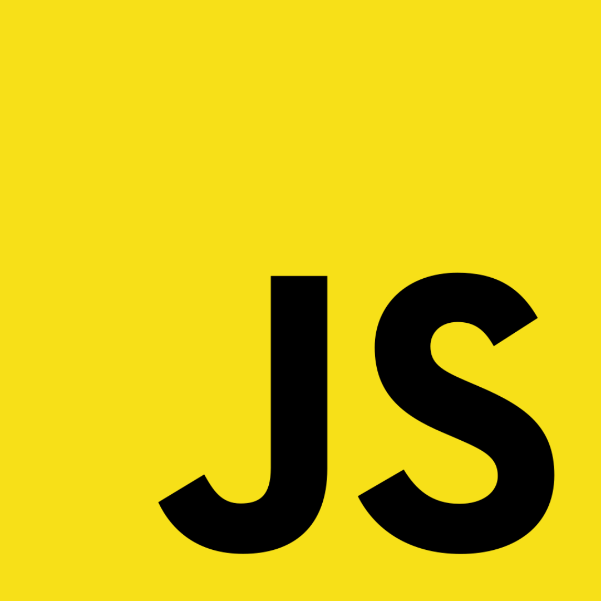
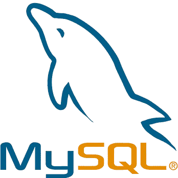

À propos de moi
GUILLERMO GOMEZ
Carlos
20 ans
Bonjour et bienvenue sur mon portfolio en ligne !
Je me présente, je suis Carlos, je suis en troisième année de BUT Informatique.
Passionné d'informatique depuis petit, j'ai commencé à "coder" lorsque je suis rentré au collège.
J'ai fait une filière général au lycée, avec comme spécialités : Mathématiques, Numérique et Sciences de l'Informatique (NSI), et Anglais Monde Contemporain (AMC).
En classe de terminale, j'ai décidé de garder Mathématiques et NSI.
J'ai donc passé un Baccalauréat Général avec comme spécialité Mathématiques et NSI. Je l'ai obtenu avec la mention Bien.
Après mon BUT Informatique, je veux faire un Master en informatique afin de faire le métier que j'ai toujours voulu faire: Développeur Web
Voici quelques unes de mes qualités :
- Créatif
- Dynamique
- Sérieux
- Sociable
- Autonome
- Rigoureux
Je recherche actuellement une alternance en informatique pour le mois de septembre 2025, ci-dessous mon CV !
Télécharger mon CVPortfolio
Compétences
Durant ces années, j'ai acquis de nombreuses compétences en langages informatiques, comme par exemple : (cliquez dessus !)
|

HTML HTML, acronyme de HyperText Markup Language, est un langage de balisage utilisé pour structurer et présenter le contenu d'une page web. Il utilise des balises pour définir différents éléments tels que les titres, les paragraphes, les liens, les images, etc. |

CSS CSS, ou Cascading Style Sheets, est un langage de feuilles de style utilisé pour définir la présentation visuelle des documents HTML. Il permet de spécifier les styles de mise en page (couleur, police, taille, etc.) pour chaque élément d'une page web. Le CSS fonctionne en associant des règles de style aux éléments HTML, ce qui permet de séparer la structure et le contenu d'une page de sa présentation. |

Python Python est un langage de programmation interprété, de haut niveau et polyvalent. Il est apprécié pour sa syntaxe claire et concise, ainsi que sa facilité de lecture et d'apprentissage. Python prend en charge différents paradigmes de programmation, notamment la programmation orientée objet, impérative et fonctionnelle. |
Postgre SQL PostgreSQL est un système de gestion de base de données relationnelle (SGBDR) open source, robuste et hautement extensible. Il prend en charge les fonctionnalités avancées de SQL, ce qui en fait un choix populaire pour les applications nécessitant une manipulation complexe des données. |

JavaScript JavaScript est un langage de programmation de haut niveau, interprété et orienté objet, principalement utilisé pour créer des pages web interactives et dynamiques. Il est souvent combiné avec HTML et CSS pour créer des expériences web complètes et interactives. |
Java Java est un langage de programmation et une plate-forme de calcul lancé par Sun Microsystems en 1995. Depuis ses débuts modestes, Java a beaucoup évolué. A l'heure actuelle, une grande partie du monde numérique dépend de Java : de nombreux services et applications reposent sur cette plate-forme fiable. |
Node.js Node.js est une plateforme de développement Javascript. Ce n'est pas un serveur, ce n'est pas un framework, c'est juste le langage Javascript avec des bibliothèques permettant de réaliser des actions comme écrire sur la sortie standard, ouvrir/fermer des connections réseau ou encore créer un fichier. |

MySQL MySQL est un système de gestion de bases de données relationnelles (SGBDR). Il est distribué sous une double licence GPL et propriétaire. Il fait partie des logiciels de gestion de base de données les plus utilisés au monde, autant par le grand public (applications web principalement) que par des professionnels, en concurrence avec Oracle, PostgreSQL et Microsoft SQL Server. |
PHP PHP est un langage de programmation libre, principalement utilisé pour produire des pages Web dynamiques via un serveur web, mais pouvant également fonctionner comme n'importe quel langage interprété de façon locale. PHP est un langage impératif orienté objet. PHP a permis de créer un grand nombre de sites web célèbres, comme Facebook et Wikipédia par exemple. Il est considéré comme une des bases de la création de sites web dits "dynamiques" mais également des applications web. |
React React est un framework JavaScript pour créer des interfaces utilisateurs. Elle est maintenue par Meta (anciennement Facebook) ainsi que par une communauté de développeurs individuels et d'entreprises depuis 2013. Le but principal de ce framework est de faciliter la création d'application web monopage, via la création de composants dépendant d'un état et générant une page (ou portion) HTML à chaque changement d'état. |
Angular Angular est un framework pour clients, open source, basé sur TypeScript et codirigé par l'équipe du projet « Angular » chez Google ainsi que par une communauté de particuliers et de sociétés |
Ces années m'ont également permis d'acquérir certaines compétences professionnelles, telles que :
Travail en équipe
Leadership
Organisation
Polyvalence
Responsabilité
Discipline
Contact
|
+33 6 60 75 37 13 |
|
carlos.guillermogomez18@gmail.com |
|
Carlos Guillermo Gomez |
|
@cguillermo18 |